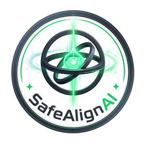
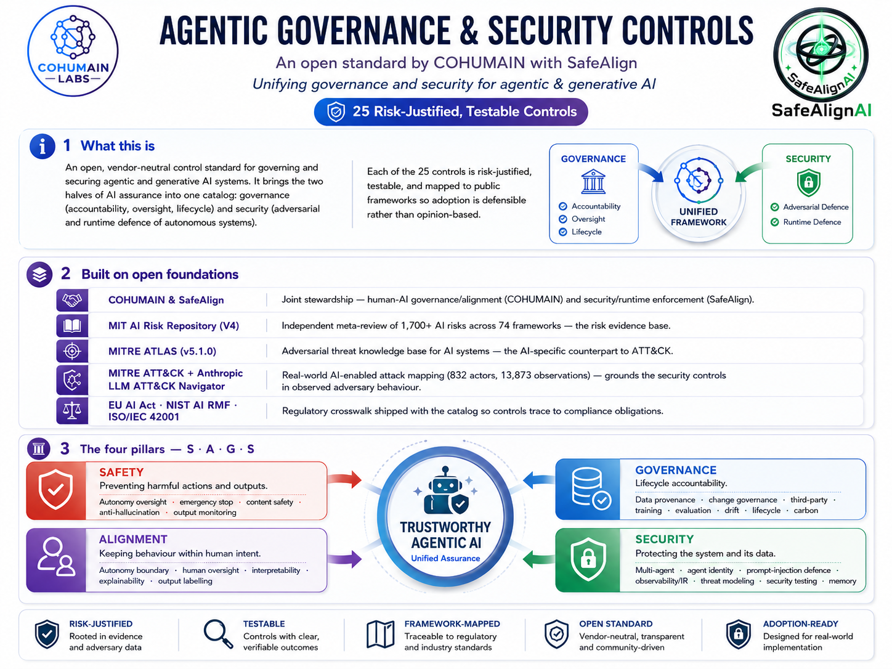

One open standard that brings governance and security into a single control plane for agentic & generative AI systems, so organisations can design, assess and deploy autonomous systems with safety, alignment, accountability and resilience built in.

SafeAlign AIGovern, monitor & secure AI agents Built on MIT | MITRE | Anthropic open researchGovernance and security unified, the open foundations it builds on, and the four pillars in a single view.

Traditional assurance keeps them apart, different teams, different tools. Agentic AI collapses them: the autonomy that creates the governance question (what may the agent decide and do?) is the same autonomy that creates the security question (what may an attacker steer, exploit or co-opt?).
This standard is the catalog of what to control and why, unifying the governance spine (accountability, oversight, lifecycle) with the security spine (the adversarial and runtime conditions under which agents operate). It is designed to be implementable, testable and mappable to external obligations.
Traditional IT fails by stopping. An agent fails by continuing, fully operational but pursuing the wrong objective, the wrong instruction source, or the wrong authority boundary.
Prompt injection is an attack written in plain language inside data, invisible to code scanning. The control plane must therefore govern both what the agent can do and what the environment can make it believe.
Across 832 real-world malicious actors, the highest-risk operations were set apart not by elite sophistication alone, but by autonomous, chained execution across tools and targets.
Every control belongs to one pillar and carries a testable objective, tight evidence, and a risk it provably closes.
Stop harmful actions, constrain autonomy, and ensure safe human override.
Hold agent behaviour to authorised goals, policies, values and instructions.
Lifecycle accountability, ownership, evidence and review across deployment stages.
Protect the agent stack against compromise, misuse and adversarial escalation.
Each security control is mapped to the MITRE ATT&CK techniques a hijacked agent would actually execute, drawn from Anthropic's analysis of real AI-enabled cyber operations.
Anthropic mapped one year of AI-enabled attacks, 832 actors, 13,873 observations, onto MITRE ATT&CK. The highest-risk operation used a technique count comparable to medium-range intrusion sets, but at machine speed and with more consistent chaining.
That behaviour, autonomous, multi-step, AI-directed execution, has no ATT&CK ID yet. That gap is the reason the Safety and Security pillars carry dedicated controls for authority boundaries, execution gating, environment isolation and recovery.
Filter by pillar or search. Click any control for its objective, key requirements, evidence, the risk it closes, and its full framework mappings.
A graduated path, adopt the foundational bar first, then layer on managed governance and full assurance. Tiers are cumulative.
The core safety and security controls that establish authority boundaries, logging, basic review, and intervention capability.
Adds governance, alignment and proactive security practices for materially impactful systems with broader tool, data or user reach.
The full catalog with continuous conformance and the strongest evidence posture for high-risk, high-autonomy or externally scrutinised systems.
Every control traces to externally-catalogued risk and recognised compliance obligations, so adoption is defensible, not opinion-based.
1,700+ risks across 7 domains / 24 subdomains. The risk evidence base, what each control closes.
Adversarial-ML technique knowledge base, the AI-specific counterpart to ATT&CK.
Real-world AI-enabled attack mapping grounding the security controls in observed adversary behaviour.
Regulatory crosswalk shipped per control so each one traces to a compliance obligation.
This standard operationalises a body of published research on safety, alignment, governance and security for agentic systems.
Full research index at cohumain.ai/research.
This is an open standard, free to use, vendor-neutral, governed by community consensus. Browse the catalog, open an issue, or propose a control.
For further details and collaboration, contact info@cohumain.ai.